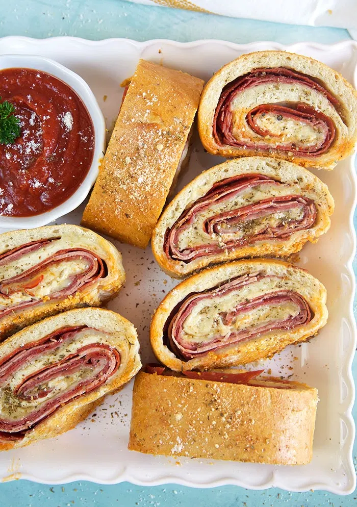

Stromboli

Ingredients
- 1/4 cup flour, for rolling
- 1 1/2 lbs pizza dough, room temperature
- 1/4 lb sliced pepperoni
- 1/4 lb sliced capicola
- 1/4 lb sliced salami
- 1/4 lb sliced provolone
- 1 cup shredded mozzarella
- 1 tsp garlic powder
- 1 1/2 tsp pizza seasoning, divided
- 1 large egg
- 1 tbsp grated parmesan
- 1 cup pizza sauce, for dipping
Instructions
- Preheat oven to 425°F.
- Lightly coat a baking sheet with cooking spray or sprinkle with
cornmeal. The cornmeal prevents sticking and adds great texture
to the stromboli once cooked. (Don't do both.)
- Lightly dust a work surface and roll the dough out to a large
rectangle approximately 9x13 inches.
- Layer the pepperoni on the dough leaving about 1/2 inch around
the edge. Layer the provolone over the pepperoni and then top
with capicola. Sprinkle with the mozzarella and top with the salami.
- Sprinkle with the garlic powder and 1 tsp of the pizza seasoning.
- Roll the stromboli up jelly roll style. Tuck the ends inward and
continue rolling until the stromboli is sealed.
- Arrange the stromboli on the prepared baking sheet seam side down.
Brush the top and sides with the eggwash. Sprinkle with the remaining
pizza seasoning and parmesan.
- Transfer to the oven and bake for 20-25 minutes until golden and crisp.
- Rest stromboli for 5-10 minutes before slicing. Serve with sauce for dipping.